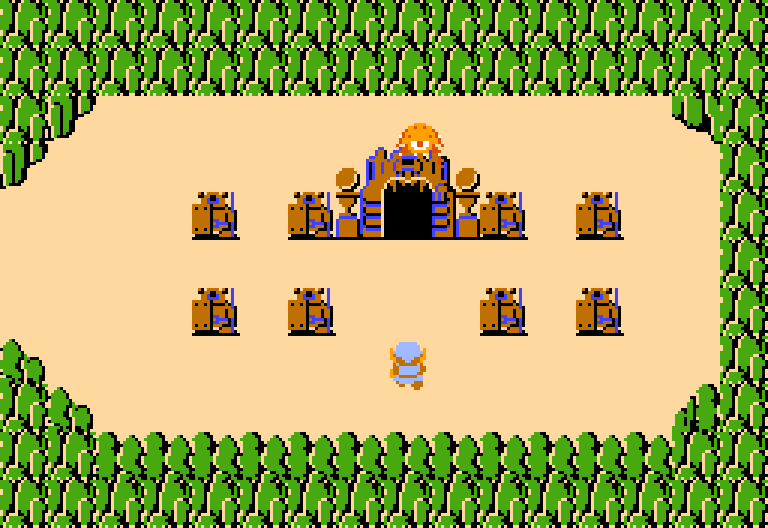
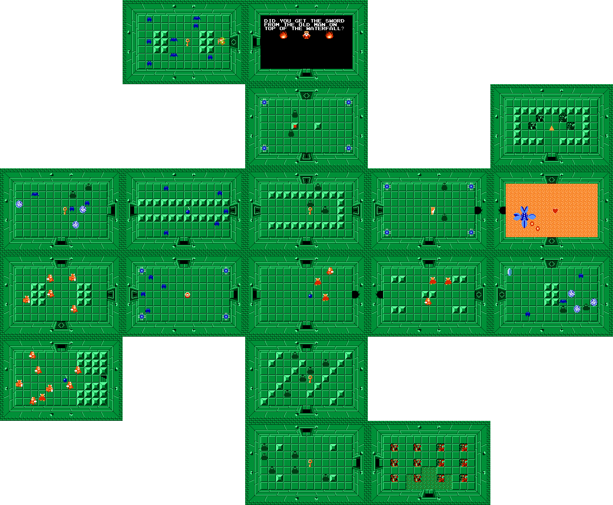
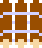
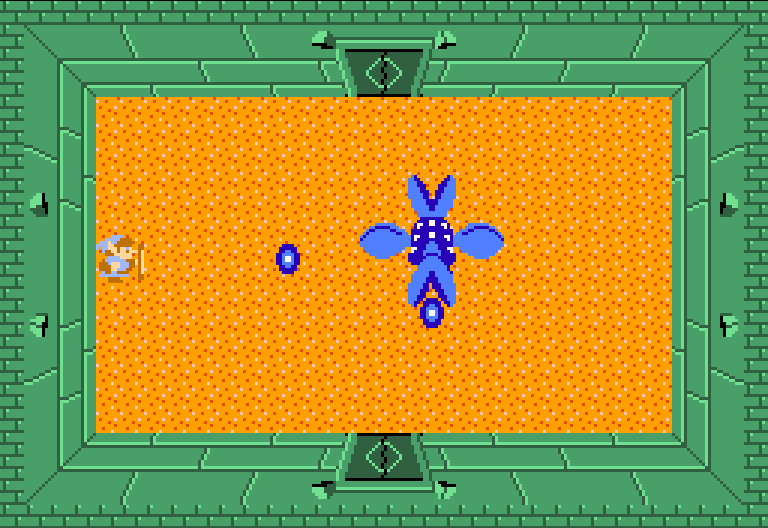

Location and How to Get There
It's surrounded by some hills, very close to the starting square.
{kind=link}

The Layout
The shape of this level represents a Manji.
A symbol used in Asian countries for peace.
Not to be confused with the hate symbol based off of it.
{kind=link}

Key Items
| Item | Description | Image |
|---|---|---|
| The Raft |
A raft you can use in the overworld to access areas closed off by water. It is required for level 4. |
 |
{kind=link}
The Boss, Manhandla
A four-headed evil plant.
This is the most difficult boss so far.
You need to destroy each of its heads. But it gets faster and more aggressive as you destroy more of them.
{kind=link}

Difficulty
6/10 This is where things start to ramp up, with the new Darknut enemies getting introduced, and the new boss Manhandla.
This dungeon is tough, especially if you don't have any sword, or armor upgrades.
My Rating
6/10. This level is fine.
It introduces a more complicated dungeon to the player, and shows them that some key items can be very hard to find if you don't pay attention.
I don't like the color scheme that much as the others, it is a very light green, the color of Link's sprite also has a slightly different color here, compared to everywhere in the entire game.